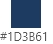
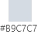
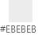

프로젝트 개요
Problems :
기존 홈페이지가 단순하여 직접적으로 사용자가 필요한 정보를 찾기 어렵습니다.
또한, 홈페이지의 기능적인 부분 보다 형식적으로 구성되었습니다.
먼저 명확하지 않은 로고, 오래된 이미지 등 쓰임으로 투자 회사 이미지와 맞지 않습니다.
Solutions
1. 투자회사는 고객과 회사의 믿음과 신뢰가 중요하기때문 신뢰감을 주고 무게감이있는 색상으로 변경했습니다.
2. 기능적인 부분(비디오, 배너 등)을 추가 하여 간단하면서도 사용자에게 도움을 주는 Contact를 추가했습니다.
3. 메인 비주얼 부분에 동적인 효과를 주었습니다.
- 작업기간
2021 . 07 . 18 ~ 2021 . 07 . 25 - 기여도
100% (랜딩페이지, 오시는 길, 헤더와 푸터 코딩) - URL(깃허브)
https://skychl00712.github.io/GRS/
- #메인컬러
  - #작업도구